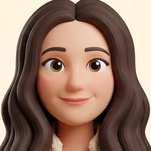

About Us
Made for children who want to join in.
Itkalim began with a parent looking for a more active way to share language with his toddlers.
From watching to speaking
Founder Ashraf Mostafa grew frustrated with passive YouTube lessons that asked his toddlers to sit and watch. He wanted them to touch, choose, listen, answer, and say the words themselves.
So he began making small, responsive language games for his family. Animal cards invite a child to find and name what they hear. Letters respond to a tracing finger. Numbers flip and speak as a child explores them.
Built with real voices
A family language sounds different when it comes from people who use it every day. Ashraf invited family members and native-speaking contributors to help shape the words, recordings, and feel of the games. Their voices give the lessons warmth and character.
